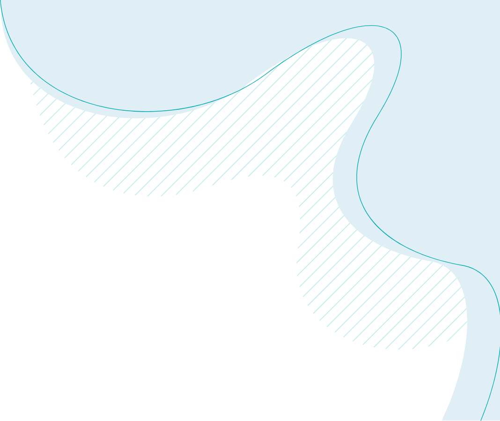
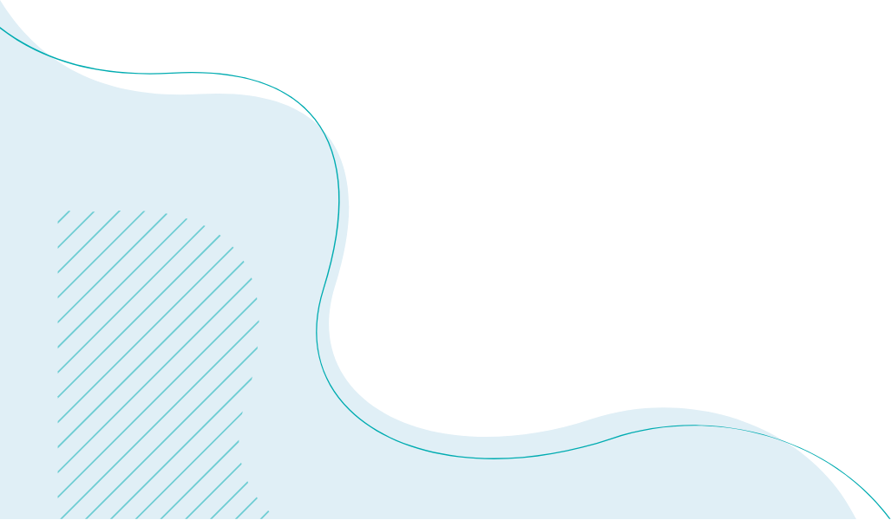

.jpg)
In all human history, we have never lived better in terms of creature comforts, medical care, connectivity tools, human rights, and world peace. Our flight or fight mechanisms and tribal orientation evolved to survive the Savannah – not the urban life. We give you comfort so that you can connect on high-quality video sessions with your therapist from the comfort of your home. We want to optimize for enhanced mental well-being for a maximum number of people. I am currently a licensed psychologist, and a member of the Indian Psychological Association, and the National Register of Health Service Psychologists. After completing my medical degree I attained a Masters's in Professional Counseling from All India Institute Of Medical Sciences, Delhi. Later I spent 5 years studying at Walden University, USA, and completed my Ph.D. in Health Psychology. I have taught multiple psychology courses and have practiced in clinical psychology, psychology of physical medicine, and rehabilitation for thirty years. I treated numerous patients in private settings, hospitals, and outpatient clinics during that time. I draw on a variety of evidence-based methods to tailor and individualize treatment based on each client’s needs. I have a warm and compassionate style in relating to my clients, while also encouraging and empowering them to work towards their goals of building a ‘life worth living